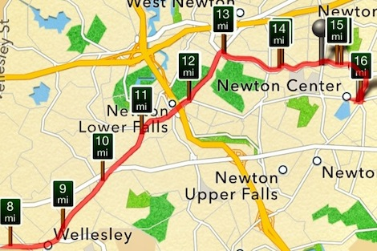

16 miles

HCF ED Lauren Broadhurst and Marathon Strong trainer Jason Sibley-Liddle kindly attended this Saturday’s 8am Marathon Coalition training to run with and cheer on me and Paula. (Sue took the weekend off to give her achy knee a break.) The MC had an 18 mile route mapped out, which was, thankfully, very straightforward since the four of us were all planning on going different lengths.
{kind=link}
Paula, fresh off the plane from a business trip in Japan, was running 13; Jason, a day before running the Hyannis Half Marathon was going out for 8; Lauren, who hadn’t run in a few months, didn’t have an exact number in mind; and I was running 16, the furthest I’ve ever gone.
Since I’ve been starting my long runs with miles nearly 2 minutes faster than I’ve been ending them with, I felt like I really needed to work on pacing. Lauren, who once ran 4 marathons in 9 months, agreed and urged me to get into the habit of starting off much more slowly. Lucky for me, she also volunteered to pace me.
We started just near the base of Heartbreak Hill, reversing the course and running west, away from Boston. Lauren ran with me for the first 6 miles, keeping me right on pace at hour 1, and, more importantly, concentrated on conversation rather than time and distance.
After running so many miles solo, talking while running was a bit challenging, but also tremendously helpful. She said my marathon pace shouldn’t be faster than what I can hold a conversation at, and though I’m not convinced I could’ve held one from miles 10-16, I am sure that the first 6 miles of talking really helped me get through the last 6. It’s amazing how a little distraction for an hour can keep you going for another hour and forty.
Between yesterday and last weekend, I’ve now run nearly 10 miles of the course. 3 have been in reverse, but the other 7 have been eye opening. From what I’ve seen and felt so far, Heartbreak Hill is not the only heartbreaker on the course.
{kind=link}
Happy to be done!